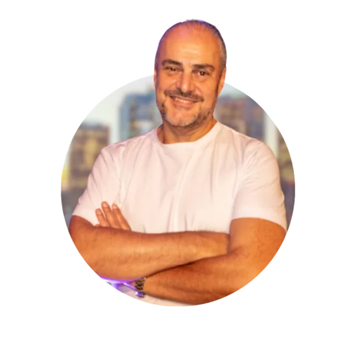

05 · TEMPLATES DE REDES SOCIAIS · construídos a partir dos modelos de referência da Pagos
A linguagem das referências (assets/referencias/Redes-Sociais): fotografia full-bleed com gradação azul profunda, tipografia branca com palavra de destaque em cor, chrome mínimo. No Painel, o usuário sobe a foto e preenche os campos — a IA monta a arte no layout. Artes em resolução real (1080×1350), exibidas aqui a 30%.
Quase 70 trilhões de reais em transações de pagamento foram movimentados no segundo semestre de 2025
Uso: divulgar em imagem uma publicação do site — estrutura idêntica ao modelo oficial (logo + fio azul, pill de categoria, título regular, linha de fonte).
Campos no Painel: foto · categoria · título · fonte — ou 1 clique a partir do blog post.
“A frase que ele falou na palestra e que merece destaque”
Uso: aspas pós-evento — foto P&B do palestrante, balão-aspas azul com a frase, nome em destaque (estrutura do modelo oficial).
Campos no Painel: foto do evento · frase · nome · cargo · edição do encontro.
ENCONTRO PAGOS:
O futuro dos facilitadores e os impactos
da nova agenda do Banco Central
 LINCONL ROCHADiretor Presidente
LINCONL ROCHADiretor PresidentePAGOS
 VALÉRIA CARRETEVP Emissores
VALÉRIA CARRETEVP EmissoresPAGOS
 DANIEL NERYVP Facilitadores
DANIEL NERYVP FacilitadoresPAGOS
Uso: convite pré-evento — cidade ao fundo, "Realização Pagos", palestrantes em P&B, CTA azul e rodapé de patrocinadores (estrutura do modelo oficial).
Campos no Painel: título · data/hora/local · lista de palestrantes (foto, nome, cargo) · patrocinadores.

Ari Pinto Painelista · Reunião Mensal de Julho
Uso: 1 slide por palestrante, no padrão da referência (foto + pill de @ + nome + papel).
Campos no Painel: lista de palestrantes (foto, nome, cargo) — a IA gera o carrossel inteiro.
O custo invisível que faz seu negócio perder margem em cada venda. Entenda.
Uso: capa que abre qualquer carrossel — fiel à referência (foto lifestyle, frase com pesos leve/negrito e destaque em cor, barra inferior com logo + "arraste").
Campos no Painel: foto · frase-gancho · chamada de ação.
Nota: os 5 templates seguem os modelos oficiais de Design/modelo-posts/ — T1 Notícia (logo + fio, pill, título regular, fonte), T2 Aspas pós-evento (P&B + balão-aspas azul), T3 Convite (cidade, palestrantes, patrocinadores), T4 Palestrantes (retrato de estúdio) e T5 Capa de carrossel. Fotos de demonstração geradas por IA (as mesmas que o Painel usará); fotos reais dos eventos substituem na operação.